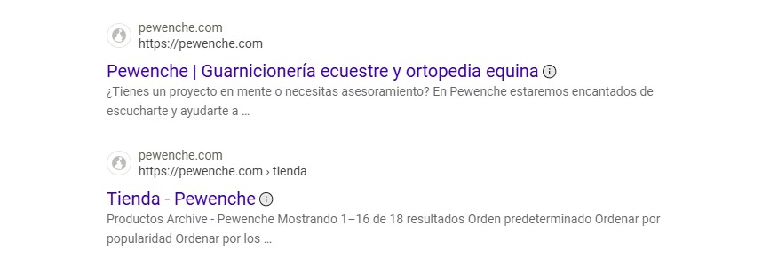

01
Web corporativa
Desarollo · HTML + CSS
Diseño y desarollo de la primera web corporativa para la empresa Pewenche y participación consultiva en el desarollo de su segunda versión
Caso de estudio
- Problema
- Falta de presencia en la web.
- Solución
- Ofrecer una página web que cumpla con las necesidades de la empresa y permita que los clientes en potencia la conozcan.
- Resultado
- Una web con contenidos atractivos sobre los productos, servicios y optimizada para multiplataforma.
- Métricas
- Dificultad: MEDIA · Nivel de satisfacción: 90%